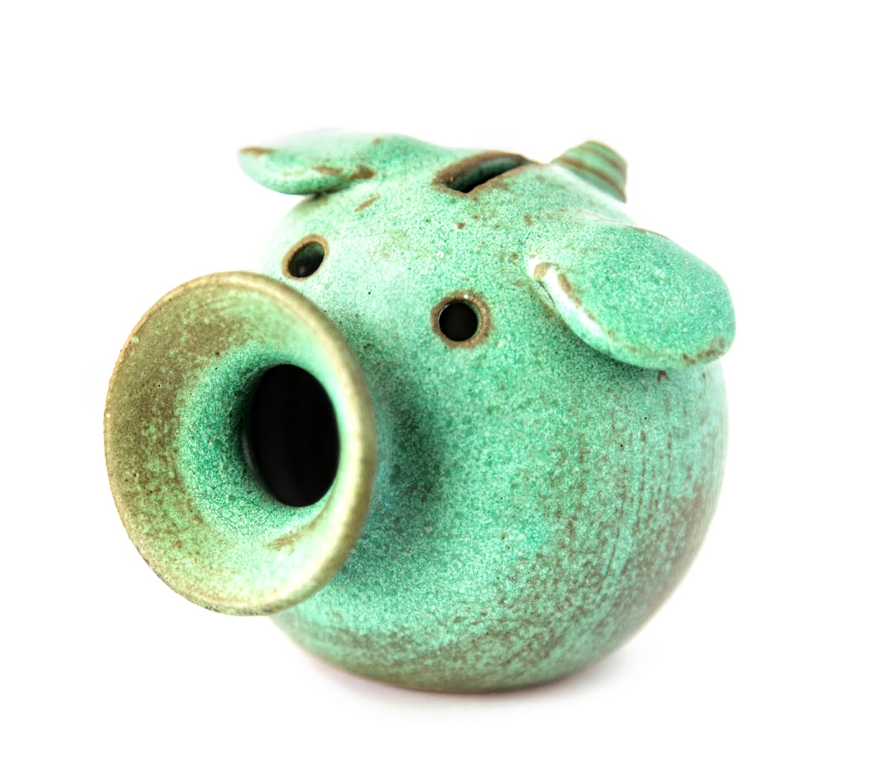

Nicholas Chornay
Recent works:
Searching for central stars of planetary nebulae in Gaia DR2 (A&A paper, June 2020)
Planetary Nebulae in the Era of Gaia (Poster from Artificial Intelligence in Astronomy workshop at ESO Garching, July 2019)
Towards a Complete Census of CSPNe in Gaia (Conference Paper from ESLAB #53, April 2019)
Towards a Complete Census of CSPNe in Gaia (Presentation from ESLAB #53, April 2019)
